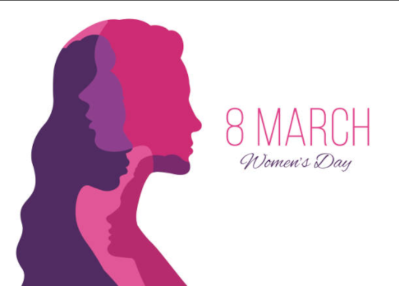
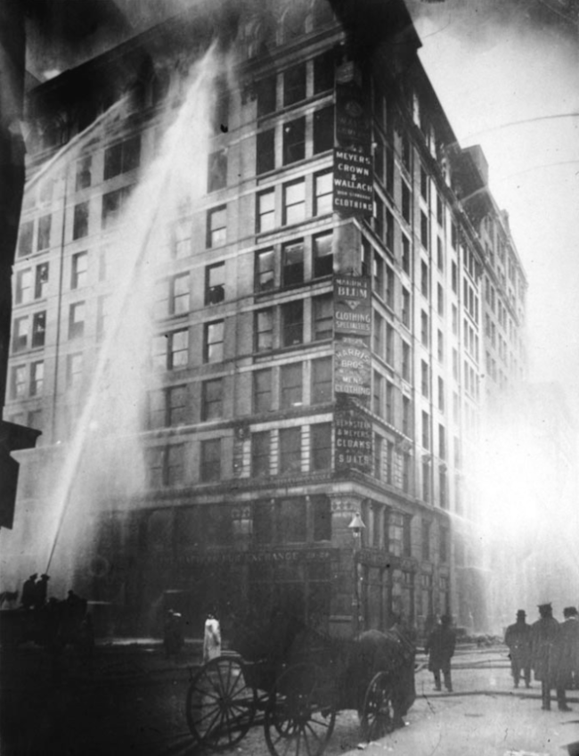
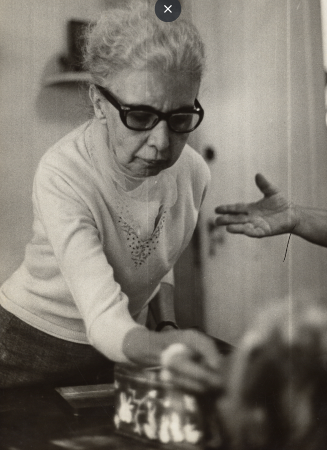

O dia internacional da mulher (8 de Março) é uma data comemorativa, resultado da luta das mulheres por meio de manifestações, greves, comitês e etc, durante o século XX, quando mulheres começaram a lutar por melhores condições de trabalho, direitos políticos e igualdade.

Caso da fábrica:
Um caso muito conhecido, relacionado à luta das mulheres no século XX, é o caso no qual mais de 129 operárias morreram carbonizadas no incêndio de uma fábrica, em Nova York. Ao que tudo indica, as mulheres não conseguiram fugir porque os empregadores mantinham as portas trancadas para evitar roubos e pausas.

Mulheres brasileiras que se destacaram:
Tatiana Lobo Coelho de Sampaio
Tatiana Lobo Coelho de Sampaio foi a mulher brasileira que descobriu uma molécula com potencial para reverter lesões medulares, trazendo de volta o movimento para pessoas tetraplégicas.
Nise Magalhães da Silveira

Nise Magalhães da Silveira foi uma psiquiatra brasileira que foi reconhecida mundialmente por sua contribuição à psiquiatria, ela se manifestou radicalmente contra formas agressivas em tratamentos psiquiátricos.
Marta Vieira da Silva
Sugestão de Livro (Extra)
Gênero: Fantasia
Autora: Sarah J. Maas
Editora: Galera
Classificação indicativa: 14 anos
Série de livros: trono de vidro
Resumo: Trono de vidro é um livro de uma saga com 8 livros, chamada Trono de vidro. Esse livro nos conta a história de uma jovem de 18 anos, chamada Calaena. No livro vamos mergulhar na história da protagonista, que está presa nas minas de sal de Endovier, ela é uma grande assassina, poderíamos dizer que a melhor de Adarlan. Por estar presa, ela está fraca e terá de enfrentar assassinos tão habilidosos quanto ela. No livro, acompanhamos a personagem em busca de sua liberdade, sem esperanças e sem forças, Calaena continua, sem saber se viverá ou morrerá. A obra tem uma protagonista forte, com representatividade feminina, que, apesar dos acontecimentos e dos motivos para desistir, continua em busca de ser livre. Ela é julgada mas continua em pé. Por que esse livro para o dia das mulheres? Porque Calaena nos mostra que devemos lutar pelos nossos direitos, nós, mulheres, não somos piores que os homens e tudo isso é mostrado com o sistema político típico de fantasia, de uma forma leve. Que todas a mulheres que lerem esse livro se sintam importantes, fortes e capazes de tudo. Você pode e você é capaz! Feliz dia das mulheres.